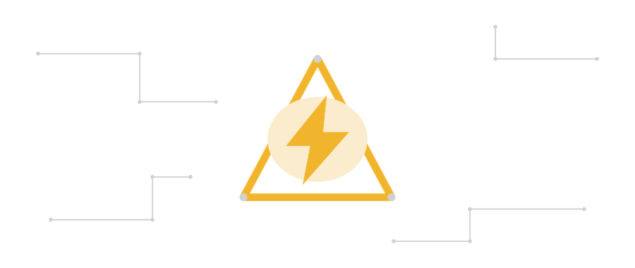

Toutes les notions du programme B0 passées au crible. Réponds seul(e), sans regarder la fiche — c'est comme ça qu'on repère ce qui n'est pas encore acquis.
Certaines questions ont plusieurs bonnes réponses — c'est précisé à chaque fois.
Les questions ratées reviennent en priorité au prochain essai, les autres suivent dans un ordre aléatoire — jamais deux fois le même enchaînement.
Choisis un thème : les questions viendront uniquement de cette catégorie.
—
—
—